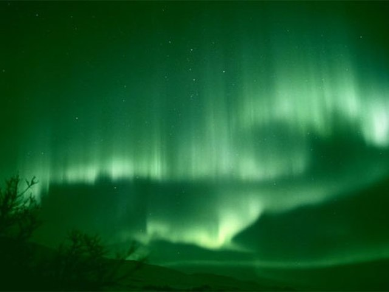

The Magic of the Northern Lights
Prospect 3: Aurora Borealis; a fancy name for The Northern Lights, is one of the most mesmerizing sights to experience. However, to see this phenomenon in such a vibrant manner as depicted in the image, you have to travel to northern areas, like Norway, Iceland, and the State of Alaska. However, there's more to the Northern lights than meets the eye. the dancing greens and pinks of the aurora are caused by collisions between the gas particles in the earth's atmosphere and charged particles released by the sun. Why is this important? Because, the colours change depending on the type of gas molecules that collide--oxygen, for example, causes the greens, while the pinks are caused by nitrogen. This phenomenon occurs only in the poles due to the configuration of the Earth's magnetic field, and the reaction between solar wind and our planet.
Did you know? Your camera can "see" the Aurora better than you can.